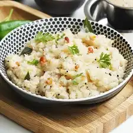

Upma Recipe

Upma is a popular South Indian breakfast made with cream of wheat or semolina flour (called rava or suji locally), veggies, spices and herbs.
Ingredients
- ⅓ cup finely chopped onions
- 2 tablespoons coriander leaves (cilantro)
- 2 teaspoon chopped green chillies
- 1.5 teaspoon finely chopped ginger
- 10 curry leaves
- 9 cashews
- 1 teaspoon urad dal (hulled and split black gram)
Steps
- Heat a pan or kadai first or so
- Stir often while roasting the rava
- The rava or sooji grains should become fragrant
- Switch the flame off and put the roasted rava on a plate and set aside.
- Heat in a pan 2 tablespoons ghee (clarified butter) or oil. You could use sunflower oil or peanut oil or safflower oil or any neutral tasting oil.
- Blah blah blah
- Done!
Back